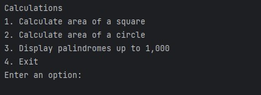
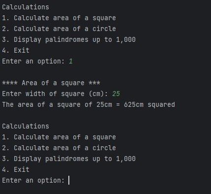
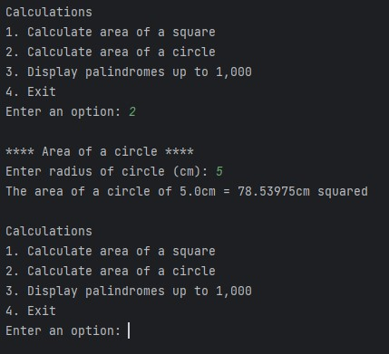
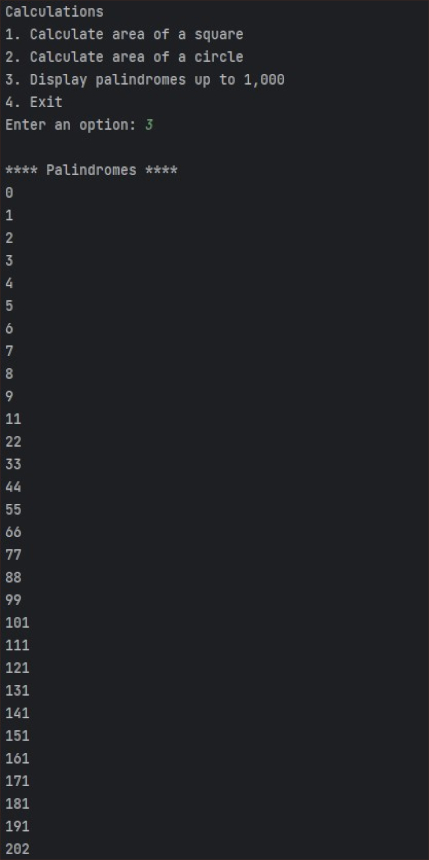
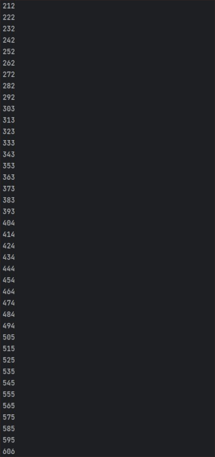
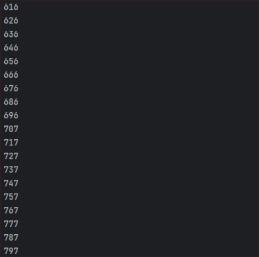
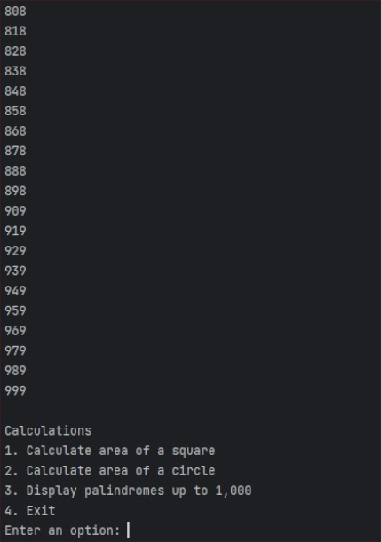
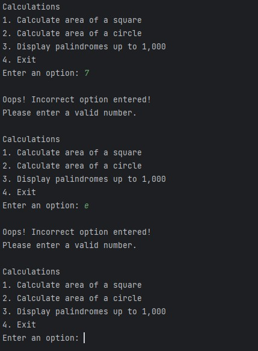
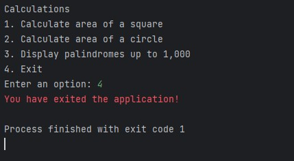

Mathematical Calculations Console Application
Project Background
This project involved converting a Java console application that handles mathematical calculations to a Python program.
Discovery
A Java file containing Java code was supplied which needed to be converted into Python.
The program also needed to be updated to include a fourth menu option that would allow the user to exit the program.
Development
The application was written in Python and developed within the PyCharm IDE.
The application contains a main menu that gives users access to program functionality to calculate the area of a square or circle, display palindromes up to 1,000 or exit the program. The main menu displays after every task completed by the user until the user selects to exit the program.
Written code is well organised and readable with comments.
Testing
A black box test was conducted after developing the Python program to test whether the functionality was the same as the Java program. An issue found during testing of palindrome numbers not displaying when the user enters menu option 3 was resolved after white box testing revealed the error within the code.
Testing also revealed errors within the inital Java code provided for the project which was corrected and updated for the Python developed program.
Deployment
The source code was uploaded to a GitHub repository after completing this project.
Evaluation
Enhancements included error handling for when a user enters a character instead of a number and updating the message displayed to the user.
Take a Closer Look
The screenshots below show what the application looks like in action.
Screens for User Interaction
The Main Menu

Area of a Square Calculations

Area of a Circle Calculations

Palindromes up to 1,000
   
Error Handling

Exiting the Program
